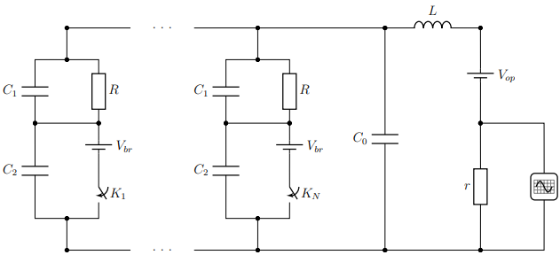

Y23 (2023) — English translation
With the development of modern technologies (including unmanned vehicles), LiDAR (Light Detection and Ranging) - devices for measuring the distance to objects in real time - are becoming in demand. The device sends laser pulses to an object and measures the time it takes for the scattered signal to be received by a photodetector. One of the promising types of such photodetectors, capable of quickly detecting short pulses ($<1~\text{нс}$) in a wide dynamic range, are SSTs (solid-state photomultipliers). TFU is formed by a matrix of parallel-connected cells. Each cell approximately represents a $p\text{-}n$ junction on silicon and a leaky dielectric layer deposited on it (quenching layer). Silicon is a semiconductor, and under normal conditions the electrons in it conduct almost no electrical current. However, when light hits the cell, the electron in the semiconductor can become conductive. Accelerating in a sufficiently strong electric field, this electron “knocks out” other electrons into a conducting state, new electrons are also accelerated, and so on - this process is called avalanche impact ionization. At the same time, a charge accumulates at the boundary of the damping layer, which screens the field in the multiplication region, and the avalanche is damped. Manufacturing a prototype TFC is a complex and expensive technological process, and direct numerical modeling of the electrophysics of a multi-cell device is difficult due to limitations in computing power, so it is useful to evaluate the characteristics of the designed device in advance. To simplify calculations, a model of the equivalent electrical circuit of the TFU has been developed, consisting of linear components (resistors, capacitances, inductances) - approximately describing the components of a real detector. Let's consider the equivalent electrical circuit of a TFU connected to a power source and a measuring device.
Fig. 1: Equivalent circuit of the TFU as part of the reading circuit

Let us describe the components of the equivalent circuit and the allowed approximations: On the left side of the circuit there is a TFU matrix consisting of $N=5\cdot{10^4}$ parallel-connected cells and parasitic (intercell) capacitance $C_0$. Each cell is simply a series connection of a $p\text{-}n$ junction and a blanking layer. The $p\text{-}n$ junction in the range of voltages applied to it in reverse bias $\bigl[V_{br}{,}V_{op}\bigr]$ can be approximated by a constant capacitance $C_2$. The avalanche process causes the voltage at the $p\text{-}n$ junction to instantly drop to the breakdown voltage $V_{br}$. The time of this process is much less than the characteristic times of all other processes in the chain. From the point of view of our circuit, the avalanche process when light hits cell number $i$ represents a short-term closure of switch $K_i$ and an instantaneous drop in voltage at the $p\text{-}n$ junction to $V_{br}=63~\text{В}$. The rest of the time the keys $K_i$ are open. The quenching layer has a constant capacitance $C_1$ and a leakage resistance $R=100~\text{МОм}$. The parasitic inductance of the detector legs and connecting elements is $L=1~\text{нГн}$. The TFU is connected in series with a constant operating voltage source $V_{op}=65~\text{В}$. The measuring device is equivalent to a resistance load $r=50~\text{Ом}$ and an ideal voltmeter (oscilloscope). For convenience of calculations, we introduce additional notations: $C_{cell}=\cfrac{C_1C_2}{C_1+C_2}$ - the capacitance of one cell $C_{det}=NC_{cell}+C_0=20~\text{пФ}$ - the detector capacitance $k=C_1/C_2=5$ - the ratio of the capacitances of the quenching layer and $p-n$ of the transition $p=C_0/C_{det}=0{.}1$ - the ratio of the parasitic capacitance to the detector capacitance $V_{ov}=V_{op}-V_{br}=2~\text{В}$ - the value of the overvoltage on the device.
Let us describe the components of the equivalent circuit and the allowed approximations:
For convenience of calculations, we introduce additional notation:
Let the circuit be in a steady state, that is, no light pulses fell on it for a very long time and the switches $K$ were open.
For steady state, find:
Under steady state conditions, light hits $n$ cells simultaneously. Let us consider the state of the circuit after such a short time after the light hits that the charge flowing through the inductance can be neglected. You can also neglect the flow of charge through the leakage resistances $R$. Let $\Delta{V}$ be the change in voltage on the capacitor $C_0$ and on the cells upon completion of the avalanche process. Take the polarity of the voltage change to be the same as the polarity of the voltage in steady state.
Due to thermal fluctuations, a noise signal may appear on the load, the amplitude of which can be estimated using the formula $V_{noise}=\sqrt{4k_BTrf}$, where $k_B=1{.}38\cdot{10^{-23}}~\text{Дж}/\text{К}$ is Boltzmann’s constant, $T$ is the load temperature (in Kelvin), $r$ is the load resistance, $f$ is the frequency bandwidth of the measuring device (oscilloscope).
One of the important characteristics of TFA is the multiplication coefficient $M$: $$M=\cfrac{Q}{e} ,$$ где $Q$ — заряд, протекший через нагрузку $r$ после попадания света на одну из ячеек за очень большое время, за которое цепь успевает полностью вернуться в установившийся режим. Изначально цепь также находилась в условиях установившегося режима. Здесь $e=1{.}6\cdot{10^{-19}}~\text{Cl}$ is the elementary charge.
The main reason that makes it difficult to reliably register a useful signal in active laser scanning systems is the noise signal from background illumination (sunlight scattered from the object, headlights from oncoming cars, etc.). In this section of the problem, we will analyze the characteristics of the signal under the influence of uniform background illumination of the detector. Let the background illumination have such an intensity that the probability of each cell triggering during the time $dt$ is equal to $dt/ T$ and does not depend on the time before the previous triggering. $T$ is the characteristic time interval between cell activations. Let us take as 1 the amplitude of the photoresponse pulse (that is, the maximum value of the signal on the oscilloscope) when light hits a completely restored cell. If the cell has not fully recovered, the amplitude of the photoresponse pulse depends on the time $t$ that has passed since the previous actuation of the cell, as ($\tau$ is the characteristic recovery time of the cell) $$ V=1-e^{-t/\tau}.$$
Hint: The standard deviation can be calculated using the formula $\sigma=\sqrt{\mu(V^2)-\mu^2(V)}$, where $\mu(V^2)$ is the mean value of the amplitude squared, $\mu^2(V)$ is the squared mean amplitude value.
Let's introduce the concept of signal-to-noise ratio ($SNR$, English signal-to-noise ratio), as the ratio of the average signal value to its standard deviation: $$SNR=\cfrac{\mu}{\sigma} $$По величине $SNR$ можно косвенно судить о динамическом диапазоне и чувствительности детектора: чем больше $SNR$, the better these characteristics are.
Find $SNR$ amplitudes of photoresponse pulses under the influence of uniform background illumination in the following cases:
Source: https://pho.rs/p/3486